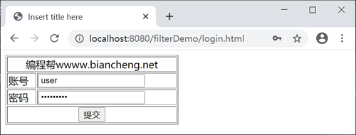
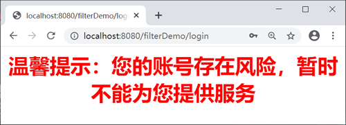
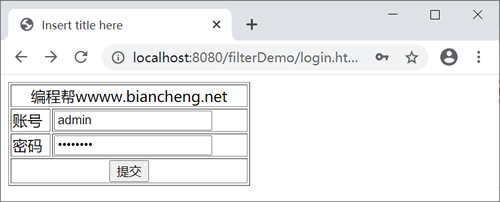
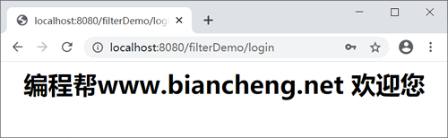

FilterConfig接口（Servlet）
Javax.Servet 包中提供了一个 FilterCofig 接口，它与 ServletConfig 接口相似，用于在过滤器初始化期间向其传递信息。
FilterConfig 接口由容器实现，容器将它作为参数传入过滤器的 init() 方法中。通过 filterConfig 对象就可以获得 Filter 的初始化参数。
在 FilterConfig 接口中，定义了 4 个方法，如下表。
在 net.biancheng.www.servlet 包中，创建名称为 LoginServlet 的类，代码如下。
在 web.xml 中配置过滤器以及初始化参数，代码如下。
在 WebContent 目录下创建 login.html，代码如下。
启动 Tomcat，在浏览器地址栏中输入“http://localhost:8080/filterDemo/login.html”，结果如下。

如下图，填写表单信息。
返回登录页，填写表单信息，如下图。
点击提交按钮，结果如下图。
FilterConfig 接口由容器实现，容器将它作为参数传入过滤器的 init() 方法中。通过 filterConfig 对象就可以获得 Filter 的初始化参数。
在 FilterConfig 接口中，定义了 4 个方法，如下表。
| 返回值类型 | 方法 | 描述 |
|---|---|---|
| String | getInitParameter(String name) | 根据初始化参数名 name，返回对应的初始化参数值。 |
| Enumeration | getInitParameterNames() | 返回过滤器的所有初始化参数名的枚举集合。 |
| ServletContext | getServletContext() | 返回 Servlet 上下文对象的引用。 |
| String | getFilterName() | 返回过滤器的名称。 |
示例
在 net.biancheng.www.filter 包中，创建名称为 BlackListFilter 的类，代码如下。
package net.biancheng.www.filter;
import javax.servlet.*;
import java.io.IOException;
import java.util.Enumeration;
/**
* 黑名单过滤器
*
* @author 编程帮 www.biancheng.net
*/
public class BlackListFilter implements Filter {
private FilterConfig fConfig;
public void doFilter(ServletRequest request, ServletResponse response, FilterChain chain) throws IOException, ServletException {
response.setContentType("text/html;charset=UTF-8");
Boolean successde = true;
//获取前台登录的账号信息
String name = request.getParameter("username");
//获取过滤器中的初始化参数
Enumeration<String> blackListNames = fConfig.getInitParameterNames();
//判断前台登录账号是否为空
if (name == null || "".equals(name)) {
response.getWriter().write("用户名不能为空");
} else {
//登录账号不为空，循环遍历黑名单
while (blackListNames.hasMoreElements()) {
//若登录账号是黑名单账号则不允许登录
if (fConfig.getInitParameter(blackListNames.nextElement()).equals(name)) {
successde = false;
}
}
if (successde) {
chain.doFilter(request, response);
} else {
response.getWriter().write("<h1 align=\"center\" style=\"font-family:arial;color:red;\">温馨提示：您的存在风险，暂时不能为您提供服务 </h1>\n");
}
}
}
public void init(FilterConfig fConfig) throws ServletException {
this.fConfig = fConfig;
}
}
在 net.biancheng.www.servlet 包中，创建名称为 LoginServlet 的类，代码如下。
package net.biancheng.www.servlet;
import javax.servlet.ServletException;
import javax.servlet.annotation.WebServlet;
import javax.servlet.http.HttpServlet;
import javax.servlet.http.HttpServletRequest;
import javax.servlet.http.HttpServletResponse;
import java.io.IOException;
/**
* @author 编程帮 www.biancheng.net
*/
@WebServlet("/login")
public class LoginServlet extends HttpServlet {
private static final long serialVersionUID = 1L;
public LoginServlet() {
super();
}
protected void doGet(HttpServletRequest request, HttpServletResponse response) throws ServletException, IOException {
response.setContentType("text/html;charset=UTF-8");
response.getWriter().write("<h1 align=\"center\">编程帮www.biancheng.net 欢迎您</h1>");
}
protected void doPost(HttpServletRequest request, HttpServletResponse response) throws ServletException, IOException {
doGet(request, response);
}
}
在 web.xml 中配置过滤器以及初始化参数，代码如下。
<?xml version="1.0" encoding="UTF-8"?>
<web-app xmlns="http://xmlns.jcp.org/xml/ns/javaee"
xmlns:xsi="http://www.w3.org/2001/XMLSchema-instance"
xsi:schemaLocation="http://xmlns.jcp.org/xml/ns/javaee http://xmlns.jcp.org/xml/ns/javaee/web-app_4_0.xsd"
version="4.0">
<filter>
<filter-name>BlackListFilter</filter-name>
<filter-class>net.biancheng.www.filter.BlackListFilter</filter-class>
<init-param>
<param-name>blackList1</param-name>
<param-value>编程帮黑名单用户1</param-value>
</init-param>
<init-param>
<param-name>blackList2</param-name>
<param-value>编程帮黑名单用户2</param-value>
</init-param>
<init-param>
<param-name>blackList3</param-name>
<param-value>user</param-value>
</init-param>
</filter>
<filter-mapping>
<filter-name>BlackListFilter</filter-name>
<url-pattern>/login</url-pattern>
</filter-mapping>
</web-app>
在 WebContent 目录下创建 login.html，代码如下。
<!DOCTYPE html PUBLIC "-//W3C//DTD HTML 4.01 Transitional//EN" "http://www.w3.org/TR/html4/loose.dtd">
<html>
<head>
<meta http-equiv="Content-Type" content="text/html; charset=UTF-8">
<title>Insert title here</title>
</head>
<body>
<form action="/filterDemo/login" method="GET">
<table border="1" width="50%">
<tr>
<td colspan="2" align="center">
编程帮wwww.biancheng.net
</td>
</tr>
<tr>
<td>账号</td>
<td>
<input type="text" name="username"/>
</td>
</tr>
<tr>
<td>密码</td>
<td>
<input type="password" name="password"/>
</td>
</tr>
<tr>
<td colspan="2" align="center">
<input type="submit" value="提交"/>
</td>
</tr>
</table>
</form>
</body>
</html>
启动 Tomcat，在浏览器地址栏中输入“http://localhost:8080/filterDemo/login.html”，结果如下。
如下图，填写表单信息。

点击提交按钮，结果如下图。

返回登录页，填写表单信息，如下图。

点击提交按钮，结果如下图。

关注公众号「站长严长生」，在手机上阅读所有教程，随时随地都能学习。内含一款搜索神器，免费下载全网书籍和视频。

微信扫码关注公众号